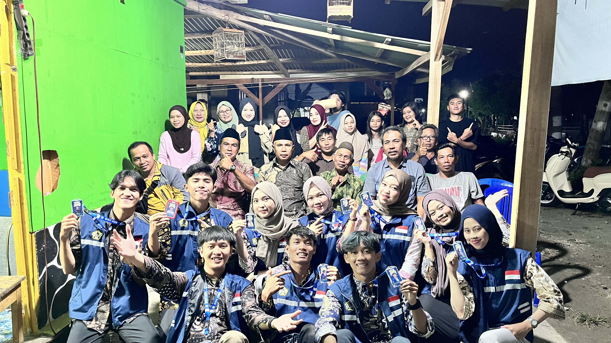

Berita Desa
Informasi terbaru Desa Kepala Pasar

20 Juni 2026
Lokakarya Anak KKN Universitas Bengkulu
Mahasiswa KKN Universitas Bengkulu Desa Kepala Pasar mengadakan lokakarya bersama warga guna meningkatkan pengetahuan dan keterampilan masyarakat dalam mendukung pembangunan desa.

23 Juni 2026
Sosialisasi Hukum
Desa Kepala Pasar menyelenggarakan sosialisasi hukum untuk meningkatkan kesadaran dan pemahaman warga mengenai pentingnya kepatuhan terhadap hukum yang berlaku.

24 Juni 2026
Gotong Royong Bersama Anak KKN Universitas Bengkulu
Warga bersama mahasiswa KKN Universitas Bengkulu melaksanakan kegiatan gotong royong sebagai wujud kepedulian dan kebersamaan dalam menjaga lingkungan desa.